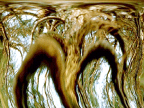

Craig Brown
"My wife took a wonderful photograph of a large pine here in Ohio last year; the photo turned out great. But, with me being an art education student/animator, I manipulated it to the point of grotesque. It was a beautiful straight pine; now it looks like it belongs in a swamp."
-Craig Brown

©Craig Brown 1998
"Untitled"
Computer Graphics
 Return to Main Page
Return to Main Page
Comments
Please send e-mail to: June Julian jj68@nyu.edu